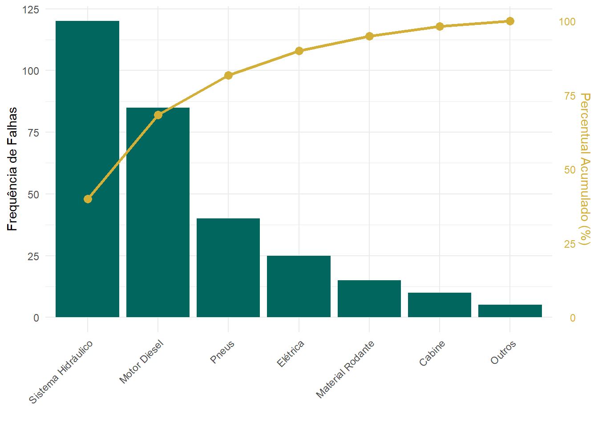

Este capítulo apresenta o arsenal metodológico essencial para o analista de dados na mineração. A aplicação correta destas ferramentas permite transformar terabytes de dados brutos de telemetria e manutenção em diagnósticos precisos para a tomada de decisão.
As ferramentas aqui apresentadas não devem ser utilizadas de forma aleatória. Elas seguem o fluxo lógico do MASP (Método de Análise e Solução de Problemas) e do ciclo PDCA, garantindo que a engenharia identifique o problema correto, descubra a causa raiz e estabilize o processo operacional.
5.1 O Caminho da Solução: PDCA e MASP
O ciclo PDCA é uma ferramenta simples que promove alterações graduais no processo, impulsionando o desenvolvimento contínuo da organização. O ciclo é dividido em etapas de planejamento (PLAN), execução (DO), verificação (CHECK) e ação (ACT).
Nota📌 DEFINIÇÃO NORMATIVA
De acordo com Mendes (2007), o ciclo PDCA é um método estruturado para a melhoria contínua dividido nas seguintes etapas:
PLAN (Planejar): Definir a situação atual, estabelecer metas mensuráveis e estratégias.
DO (Executar): Educar os envolvidos e implementar as estratégias.
CHECK (Verificar): Comparar os resultados obtidos contra as metas.
ACT (Agir/Padronizar): Tomar ações corretivas ou padronizar a melhoria.
A fase de planejamento (PLAN) exige o maior rigor e dedicação de tempo do projeto. Para que essas etapas sejam realizadas com eficácia, a engenharia utiliza o MASP como ferramenta de controle e auditoria, estruturando a pesquisa das causas de forma científica.
Aviso⚠️ ARMADILHA DE ENGENHARIA
O erro mais comum em projetos de melhoria é a “Miopia de Ação”: a equipe pular a fase de Planejamento (P) e ir direto para a Execução (D). Implementar soluções baseadas em “achismos” e não em dados estratificados consome recursos financeiros e, na maioria das vezes, ataca apenas o sintoma.
5.2 Mapeamento de Fronteiras: SIPOC e Fluxograma
Antes de mergulhar nas causas de um problema usando ferramentas estatísticas, a equipe de engenharia precisa garantir que todos compreendam o fluxo macro do processo e as suas fronteiras. O maior erro de um projeto é tentar “abraçar o mundo”.
5.2.1 A Matriz SIPOC
Para delimitar esse escopo, utilizamos a ferramenta SIPOC, que padroniza o mapeamento de qualquer processo na operação mineral:
S (Supplier / Fornecedor): Quem fornece os insumos? (Ex: Topografia).
I (Input / Entrada): Quais recursos são fornecidos? (Ex: Malha de perfuração).
P (Process / Processo): Quais são as macroatividades? (Ex: Furar \(\rightarrow\) Carregar \(\rightarrow\) Detonar).
O (Output / Saída): O que o processo gera? (Ex: Minério desmontado).
C (Customer / Cliente): Quem recebe a saída? (Ex: Operadores de Escavadeira).
5.2.2 O Fluxograma
Enquanto o SIPOC define as fronteiras, o Fluxograma detalha o caminho. Conforme Castro (2024), é uma representação lógica que utiliza símbolos gráficos padronizados para detalhar a sequência de ações.
O propósito do fluxograma é ampliar o entendimento do processo de produção mineral (como o ciclo de transporte: Carregar \(\rightarrow\) Transportar \(\rightarrow\) Bascular \(\rightarrow\) Retornar) e apontar áreas que necessitam de padronização (Peinado e Graeml, 2007). Slack (2009) afirma que essa clareza visual é vital para a criação de Procedimentos Operacionais Padrão (POPs).
5.3 Ferramentas de Priorização e Diagnóstico
Com o processo mapeado, o analista de dados precisa descobrir onde o problema está concentrado e por que ele ocorre.
5.3.1 Diagrama de Pareto
O Diagrama de Pareto é uma das ferramentas mais clássicas e eficazes no controle da qualidade e gestão de ativos. Trata-se de uma representação gráfica que hierarquiza problemas, causas ou perdas de forma decrescente.
Conforme Campos (2004), esta ferramenta operacionaliza o Princípio de Pareto (80/20), permitindo que gestores alcancem resultados significativos focando em poucas, mas críticas, alavancas. O princípio postula que, em geral, 80% dos efeitos derivam de apenas 20% das causas (Silva, 2009).
No contexto do Mining Analytics, um valor elevado nas primeiras barras do gráfico indica onde a ineficácia se concentra (Franco et al., 2006). A Figura 5.1 exemplifica esta aplicação utilizando o ambiente R, onde o esforço de manutenção é direcionado para os modos de falha predominantes.
Código
library(ggplot2)library(dplyr)# Dados simuladosdf_pareto <-data.frame(Causa =c("Sistema Hidráulico", "Motor Diesel", "Pneus", "Elétrica", "Material Rodante", "Cabine", "Outros"),Ocorrencias =c(120, 85, 40, 25, 15, 10, 5)) %>%arrange(desc(Ocorrencias)) %>%mutate(Acumulado =cumsum(Ocorrencias),Freq_Acumulada = Acumulado /sum(Ocorrencias) *100,Causa =factor(Causa, levels = Causa) )# Fator de escala para o eixo secundárioscale_factor <-max(df_pareto$Ocorrencias) /100ggplot(df_pareto, aes(x = Causa)) +geom_bar(aes(y = Ocorrencias), stat ="identity", fill ="#01665e") +geom_line(aes(y = Freq_Acumulada * scale_factor, group =1), color ="#d4af37", size =1.2) +geom_point(aes(y = Freq_Acumulada * scale_factor), color ="#d4af37", size =3) +scale_y_continuous(name ="Frequência de Falhas",sec.axis =sec_axis(~ . / scale_factor, name ="Percentual Acumulado (%)") ) +theme_minimal() +labs(x ="") +theme(axis.text.x =element_text(angle =45, hjust =1),axis.title.y.right =element_text(color ="#d4af37"),axis.text.y.right =element_text(color ="#d4af37") )

Figura 5.1: Diagrama de Pareto aplicado aos modos de falha (Paleta Teal/Gold).
5.3.2 Ishikawa, 5 Porquês e Matriz GUT
Uma vez que o Gráfico de Pareto indicou onde atuar, utiliza-se o Diagrama de Ishikawa (Espinha de Peixe) para realizar o brainstorming das causas raízes, dividindo-as nos 6M: Máquina, Material, Mão de Obra, Método, Medida e Meio Ambiente.
Em seguida, aplica-se a Matriz GUT (Gravidade, Urgência e Tendência) para pontuar e priorizar a causa vencedora. Por fim, utiliza-se a técnica dos 5 Porquês para aprofundar a investigação até a anomalia sistêmica original.
5.4 Ferramentas Avançadas de Engenharia e Manutenção
Para análises de confiabilidade e gestão de horas na mineração, o analista de dados utiliza gráficos específicos para decomposição de tempo e classificação de ativos.
5.4.1 Diagrama de Build-up (Waterfall)
O diagrama em cascata (Waterfall ou Build-up) é excelente para demonstrar como o tempo calendário total de um equipamento (ex: 720 horas no mês) é consumido pelas diversas perdas operacionais e de manutenção até chegar nas horas puramente produtivas. A Figura 5.2 demonstra essa decomposição visualmente através do pacote waterfalls no R.
Figura 5.2: Gráfico de Build-up (Cascata) demonstrando a decomposição das horas de um ativo.
5.4.2 Diagrama de Jack-Knife
O método de Jack-Knife foi concebido para ser uma aprimoração do diagrama de Pareto (Knights, 2001). A premissa básica é a adição de uma análise de dois fatores, avaliando conjuntamente o Tempo Médio de Reparo (MTTR) e o Número de Intervenções Corretivas (NIC).
O uso do diagrama de Pareto, isoladamente, leva em consideração apenas um indicador (como o volume de horas paradas). O diagrama Jack Knife (Figura 5.3) é uma ferramenta de priorização do tratamento das falhas que classifica os sistemas em leve, agudo, crônico e crítico.
5.4.2.1 Definição de Limites e Equações
A separação dos quadrantes é dada pelos limites determinados de acordo com o banco de dados dos sistemas, utilizando as seguintes equações matemáticas:
Onde \(k\) é o número de sistemas em análise e \(\mathrm{HMC}\) representa as Horas de Manutenção Corretiva.
Os sistemas localizados acima da linha de \(\mathrm{Limite}_{\mathrm{MTTR}}\) são os que afetam a mantenabilidade. Já os sistemas à direita da linha de \(\mathrm{Limite}_{\mathrm{NIC}}\) são os que afetam a confiabilidade.
5.4.2.2 Classificação por Quadrantes
A classificação dos sistemas ocorre conforme a posição em relação aos limites calculados:
Quadrante Leve: Ocorre quando \(\mathrm{NIC} < \mathrm{Limite}_{\mathrm{NIC}}\) e \(\mathrm{MTTR} < \mathrm{Limite}_{\mathrm{MTTR}}\). Apresentam boa confiabilidade e boa mantenabilidade.
Quadrante Crônico: Ocorre quando \(\mathrm{NIC} > \mathrm{Limite}_{\mathrm{NIC}}\) e \(\mathrm{MTTR} < \mathrm{Limite}_{\mathrm{MTTR}}\). Problemas repetitivos (baixa confiabilidade) com reparos rápidos.
Quadrante Agudo: Ocorre quando \(\mathrm{NIC} < \mathrm{Limite}_{\mathrm{NIC}}\) e \(\mathrm{MTTR} > \mathrm{Limite}_{\mathrm{MTTR}}\). Mantenabilidade ineficiente (reparos longos), mas com poucas falhas.
Quadrante Crítico (Agudo e Crônico): Ocorre quando \(\mathrm{NIC} > \mathrm{Limite}_{\mathrm{NIC}}\) e \(\mathrm{MTTR} > \mathrm{Limite}_{\mathrm{MTTR}}\). São os sistemas pouco confiáveis e difíceis de reparar, exigindo atenção prioritária da engenharia.